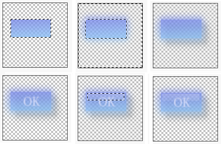

Making a button
This tutorial demonstrates that Greenfish Icon Editor Pro is not just an icon editor,
but it can also be used to create other small images with alpha channel as well.
You will learn here how to create a button with the program using gradients and filters.
- Create a new document (128x128 in the example).
Then select a rectangular area with the Rectangular select (S) tool.
Then choose a foreground and background color for your button and fill the rectangle with
a linear gradient using the Gradient (G) tool.
- Invert the selection by using Edit | Invert selection or pressing Ctrl+I.
Then choose Filters | Custom blur... and select Gaussian blur with radius 10
to form a glow around the button.
- Press Ctrl+D to remove the selection. Then use Filters | Drop shadow...
and select a distance of 15 and an intensity of 20. Press OK and you will see a soft
shadow under the button.
- Select a foreground color with low alpha for the button text.
Use the Text (T) tool and choose an appropriate font to draw the button text.
Move the text to its right place with the Transform (F) tool.
Then use Filters | Blur More to soften the text outlines.
- Add a highlight to the button by selecting a rectangular area and drawing a white-white gradient
with a varying but low alpha.

- The button is ready. This sample image can be found in the Samples folder.